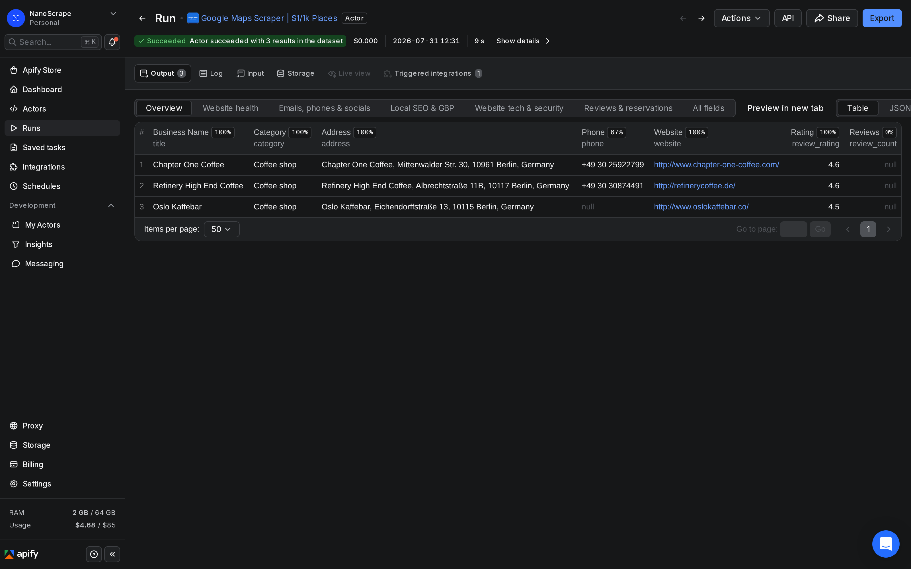
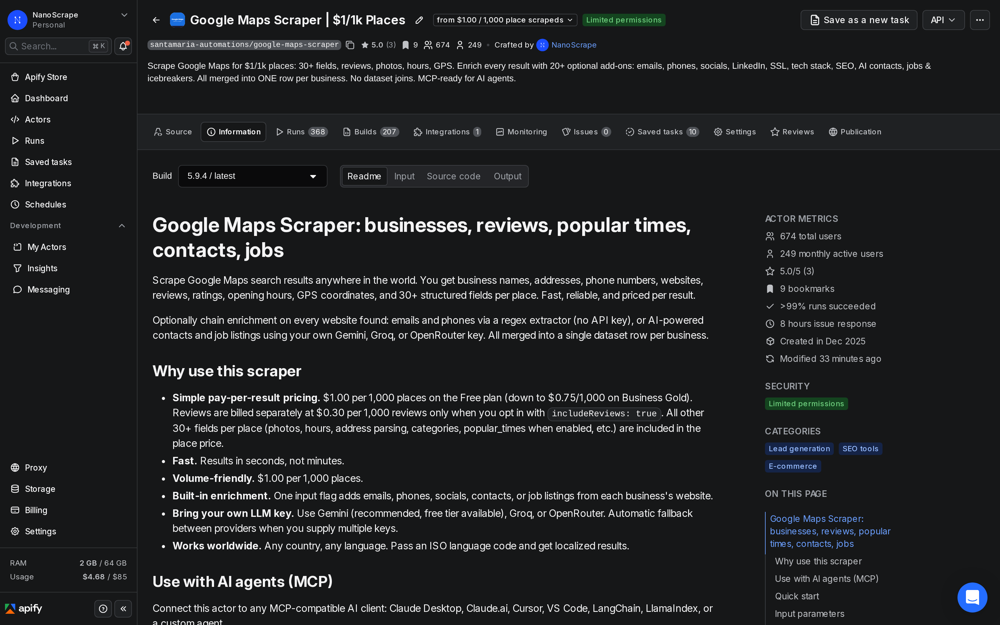
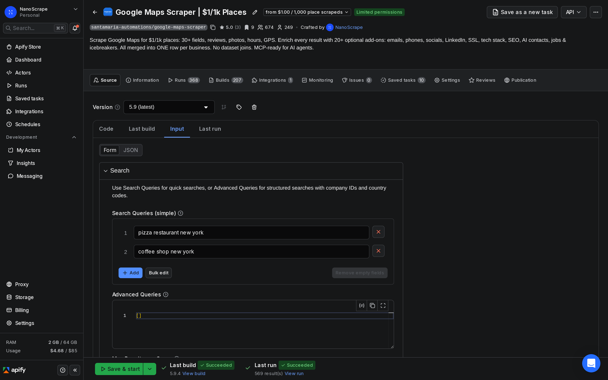
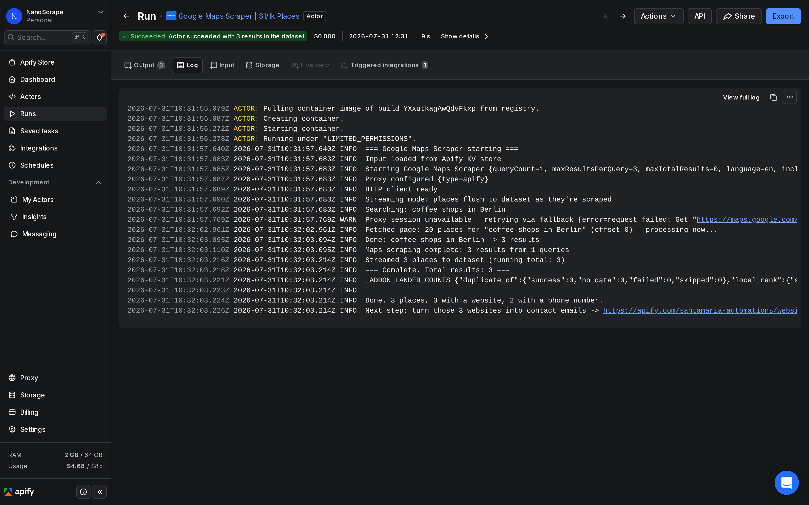

How to Use a Google Maps Scraper to Extract Business Leads and Contact Data
The Google Maps Places API costs $17 per 1,000 results for the full details tier, requires a billing account, and gets expensive fast at scale. The NanoScrape Google Maps Scraper on Apify costs $1 per 1,000 places, needs no API key, and returns 30+ fields including phone, website, rating, opening hours, and GPS coordinates. You can optionally chain on email extraction, AI-powered contacts, job listings, and personalized outreach lines. This guide walks through setup, all input options, and the enrichment stack.

In this tutorial
- What you get
- Prerequisites
- Step 1: Create a free Apify account
- Step 2: Open the Google Maps Scraper
- Step 3: Configure your search
- Step 4: Run the actor
- Step 5: Export your results
- Enrichment: emails, contacts, and more
- Advanced: structured queries
- Connect to AI agents via MCP
- Key output fields
- What it costs
- FAQ
What you get
The NanoScrape Google Maps Scraper runs on Apify and accepts plain search strings (like "coffee shops in Berlin" or "dentists in Chicago") or structured query objects with location, country, and your own internal ID. Each run returns up to 10,000 places by default, works in any country and language, and completes most small batches in under a minute.
- 30+ fields per place: business name, category, full address (structured by street/city/postal code/country), phone, website, rating, review count, GPS coordinates, timezone, price range, and operational status.
- Email extraction: visits each place's website and extracts contact emails, phone numbers, and social links using regex. No API key needed.
- AI contacts and job listings: bring your own Gemini, Groq, or OpenRouter key to extract named contacts (name, title, email, phone) and open job listings from each website.
- Popular times: the crowd-level histogram by hour (Monday through Sunday) where Google provides it.
- Reviews: opt in to pull individual review text, rating, and reviewer name per place.
- AI icebreakers: one personalized cold-outreach opening line per place, written in any output language you specify.
All enrichment fields merge into the same dataset row as the Maps data. You get one flat file per run, ready to load into a CRM, paste into a spreadsheet, or pass to a downstream workflow.
Prerequisites
- A free Apify account. The free tier gives $5 of usage credit every month, enough for 5,000 places.
- One or more search queries, each including the business category and location (for example, "accountants in Madrid" or "yoga studios in Sydney").
Create a free Apify account
- Open the actor page on Apify and click Try for free.
- Sign up with Google or email. The form takes about a minute.
- You land on the actor's input form inside Apify Console. The $5 free credit is added automatically.
Open the Google Maps Scraper
After signing in you are on the actor's page. The Information tab shows pricing, a description of all features, and example inputs. The Input tab is where you fill in your search queries.

Configure your search
Click Input in the left sidebar. The simplest setup is a list of search strings. Combine the business type and location inside the same string:
{
"searchStrings": [
"restaurants in Paris",
"coffee shops in Tokyo",
"dentists in New York"
],
"maxResultsPerQuery": 20
}Key input fields:
searchStrings: an array of plain search queries. Each runs as a separate Google Maps search. Order them however you like.maxResultsPerQuery: how many places to return per query. Google Maps caps at 120 per page; set to 20 for a quick test or 120 for the maximum.maxTotalResults: optional hard cap across all queries combined. Useful for cost control on large batches.language: ISO 639-1 code (defaulten). Passde,fr,ja, etc. to get localized business names and categories.includeReviewCount: set totrue(the default) to add areview_countfield per place. Adds about 150 ms per result.includePopularTimes: opt-in to add the crowd-level histogram per place.

Run the actor
- Click Start at the bottom of the Input tab.
- The run opens automatically and you see the Log tab. Each line represents one batch of places fetched.
- When the run finishes you see Status: SUCCEEDED and the item count in the top stats bar.
- Click Dataset in the left sidebar to preview the results.

Export your results
Click Dataset in the left sidebar. You see a table with one row per place. Use the Export dropdown to download in the format you need:
- JSON: full nested structure with all 30+ fields per place. Best for further processing in code or workflows.
- CSV: flat file ready for Google Sheets, Excel, or most CRM import tools. Nested objects (like
complete_address) are flattened automatically. - Excel: .xlsx file, formatted and ready to share.
- XML / JSONL: for specific pipeline integrations.
You can also access the dataset programmatically via the Apify API. The dataset URL is shown at the top of the Dataset tab. Append /items?format=json&token=YOUR_TOKEN to fetch all results into any script.
Enrichment: emails, contacts, and more
Every place in the dataset includes a website field where Google Maps has one. The scraper can visit those websites and pull additional data, all merged into the same dataset row.
Email extraction (no API key required)
Add "enableEmailExtraction": true to your input. The scraper visits each website and extracts emails, phone numbers, and social links via regex. Results appear in emails_from_website, phones_from_website, and social_urls.
{
"searchStrings": ["accountants in Munich"],
"maxResultsPerQuery": 50,
"enableEmailExtraction": true
}AI contacts and job listings (bring your own API key)
Pass your own Gemini, Groq, or OpenRouter API key to extract structured contacts (name, position, email, phone) and open job listings from each website. Set "waitForAddOns": true so the results merge into the place row before the run ends.
{
"searchStrings": ["IT companies in Berlin"],
"maxResultsPerQuery": 20,
"enableContactExtraction": true,
"enableJobExtraction": true,
"enableEmailExtraction": true,
"groqApiKey": "gsk_your_own_key",
"waitForAddOns": true
}AI icebreakers for cold outreach
Set "enableAiIcebreaker": true along with a tone, a focus note, and an output language to generate one personalized opening line per place. Useful when you want to prep a cold email batch without writing each intro manually.
{
"searchStrings": ["care homes in Zurich"],
"maxResultsPerQuery": 30,
"enableEmailExtraction": true,
"enableAiIcebreaker": true,
"icebreakerTone": "professional",
"icebreakerFocus": "We specialize in compliance software for care facilities",
"outputLanguage": "de",
"geminiApiKey": "your_gemini_key",
"waitForAddOns": true
}Advanced: structured queries
Use the queries field instead of searchStrings when you need to attach your own internal ID per search, split the search term from the location, or specify the country for accurate geo-targeting.
{
"queries": [
{
"query": "software companies",
"location": "Berlin",
"country": "DE",
"company_id": "campaign-berlin-tech-2026"
},
{
"query": "plumbers",
"location": "London",
"country": "GB",
"company_id": "campaign-london-plumbers"
}
],
"maxResultsPerQuery": 50
}The company_id you set on each query flows through to every place row in that query's results as the company_id field. That lets you join the dataset back to your own campaign or client records without a separate lookup step.
Connect to AI agents via MCP
The scraper is available as an MCP (Model Context Protocol) tool. Paste this server URL into any MCP-compatible client (Claude Desktop, Claude.ai, Cursor, VS Code, LangChain, LlamaIndex):
https://mcp.apify.com?tools=santamaria-automations/google-maps-scraper
Once connected, prompt your AI client in plain English. The client calls the actor with the right input and returns the structured data:
Find pediatric dentists in Zurich and put the results in a table.
Clients that support dynamic tool discovery (Claude.ai, VS Code) receive the full input schema automatically so the model can fill in any field without you specifying parameters manually.
Key output fields
Each place row in the dataset includes:
title: business name as it appears on Google Maps.category/categories: primary category and all associated categories.address: full formatted address string.complete_address: structured object withstreet,city,postal_code,state,country.phone: primary phone number.website: business website URL.rating/review_rating: star rating (1 to 5).review_count: total number of reviews (requiresincludeReviewCount: true).latitude/longitude: GPS coordinates.status:OPERATIONAL,CLOSED_TEMPORARILY, orCLOSED_PERMANENTLY.opening_hours: structured weekly schedule where available.popular_times: crowd-level histogram by hour (requiresincludePopularTimes: true).description: the business's own description text.place_id: Google's permanent identifier for the place.link: direct Google Maps URL for the place.company_id: passes through the value you set in your input query (useful for join-back to your own data).
Enrichment adds: emails_from_website, phones_from_website, social_urls (email extraction); contacts, jobs (AI enrichment); ai_icebreaker (icebreaker option).
What it costs
The scraper uses pay-per-result billing on Apify. You are charged per place extracted, not per run.
- Places: $0.001 per place ($1.00 per 1,000) on the Apify Free plan. Drops to $0.00097 on Bronze, $0.00089 on Silver, and $0.00075 ($0.75 per 1,000) on Gold and above.
- Reviews: $0.0003 per review ($0.30 per 1,000), charged only when you set
includeReviews: true. Disabled by default. - Actor start: a small one-time container fee per run (under $0.001 for typical memory settings).
The Apify free tier gives $5 of credit every month. At $1.00 per 1,000 places that covers 5,000 places per month at no cost. There is no subscription required.
FAQ
Do I need the Google Maps Places API to use this scraper?
No. The scraper does not use the Google Maps Places API at all. It scrapes Google Maps directly without any API key. You only need an Apify account.
Is there a limit on how many places I can scrape per run?
By default each run can return up to 10,000 places. You can set maxTotalResults in your input to cap it at any lower number. For larger datasets, run the actor multiple times with different queries.
What countries and languages does it support?
The scraper works in any country where Google Maps has data. Pass the ISO 639-1 language code in the language field (for example, de, fr, ja, zh) to get localized business names, categories, and addresses.
Can I run it on a schedule or via the API?
Yes. From the Apify Console you can set up a schedule (cron syntax) to run the actor automatically. You can also call it programmatically via the Apify API or the JavaScript/Python SDKs. The API endpoint is POST /v2/acts/santamaria-automations~google-maps-scraper/runs.
Does the scraper return phone numbers and email addresses?
Phone numbers come from Google Maps directly and are included in every place row as the phone field. Email addresses are not on Google Maps itself: to get them, enable enableEmailExtraction so the scraper visits each business's website and extracts contact emails via regex.
How is this different from the basic 'scrape Google Maps' approach?
The basic approach returns name, address, phone, and rating. This actor adds structured complete_address, GPS coordinates, opening hours, popular times, reviews, and a full enrichment stack: email extraction, AI-powered contacts, job listings, and cold-outreach icebreakers. Everything merges into one flat dataset row per place.
Related resources
- Google Maps Scraper actor page: Full specs, pricing tiers, and comparison with alternatives.
- How to Scrape Google Maps (quick-start guide): A shorter step-by-step guide focused on getting your first results in under 5 minutes.
- Scrape Google Maps with n8n: Automate Google Maps data collection into your own n8n workflow with no code.
- Google Maps Reviews Scraper: How to extract individual customer reviews from Google Maps at scale.
- Google Maps Scraper on Apify: Full actor documentation, all input parameters, and the complete field reference.
- All NanoScrape tutorials: Step-by-step guides for scraping Instagram, Reddit, YouTube, and more.